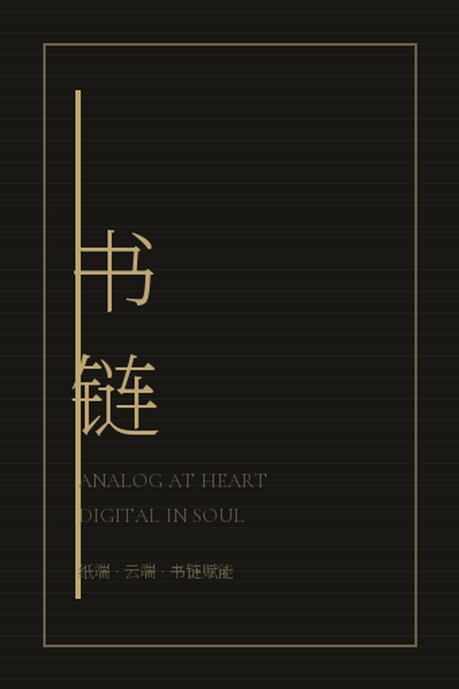
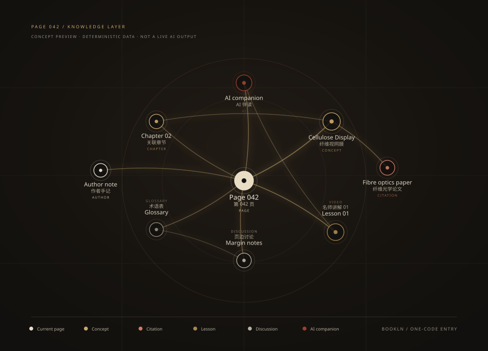

Every physical book, connected
书链
Any book. One code. Into the cloud.每一本纸书，皆可入云。
Bookln connects any physical book to its digital twin — no hardware required.
无需硬件 / 一码关联 / 云端永存。
∞books supported
0Battery cells†
1Code to unfold

Material architecture
CelluloseDisplay™
A reading surface built from fibre, air and light.由纤维、空气与自然光构成的阅读表面。
Six material layers. One sewn structure. The page stays flat at 180°.
六层材料结构，锁线装订，180° 纯平摊开。
179.9°Ambient view†
6Material layers
180°Lay-flat
Exploded view · 6 layers · not to scale
Touch is the interface
HapticRandom Access
Every page is one gesture away.每一次翻动，都直达想去的地方。
Move slowly. The paper records exactly where you stop.
慢慢翻。纸页会记住你停下的位置。
280MM bookmark
0Menus
1Last position
The physical-to-digital bridge
Analogat heart.
Digital in Soul.纸端，即云端。
Scan the page-edge mark. The context follows — without leaving the reading flow.
扫描页边标记，上下文随之而来，不打断阅读心流。
01Scan to context
∞Margin layer
0Feed distractions

Scan to context
一码入网
一码入网
书链
Concept preview · 2026 · no audio assets